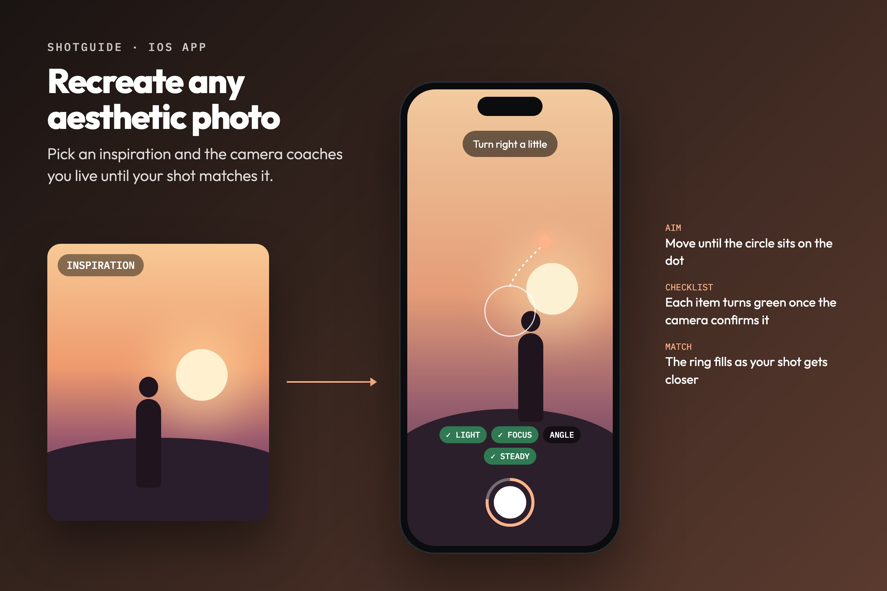
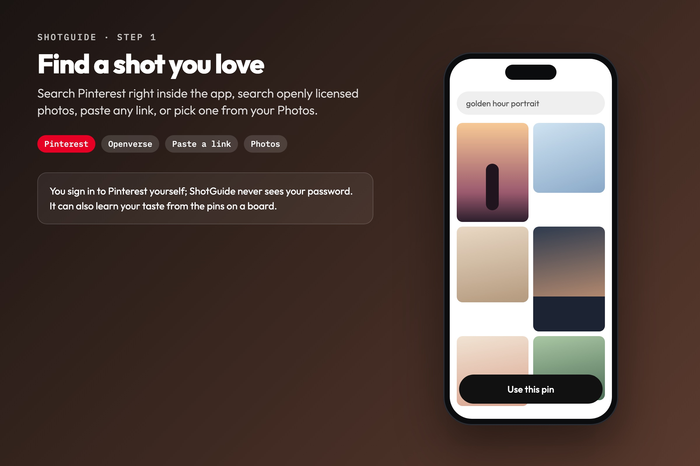
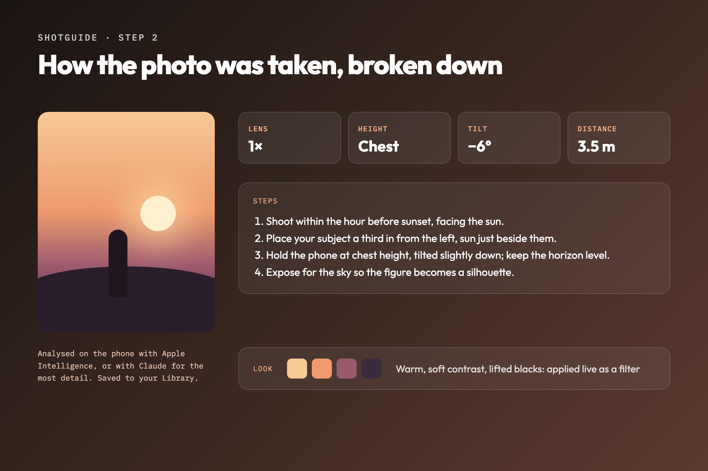
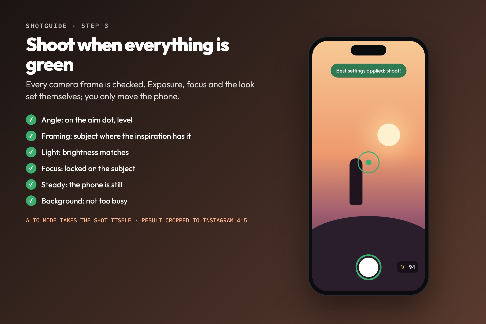

In progress · iOS app
ShotGuide
ShotGuide helps you take the photo you saw online. Pick an inspiration, and the camera works out how it was taken and coaches you live, frame by frame, until your shot matches it.




Find the shot
Search Pinterest inside the app (you sign in yourself; ShotGuide never sees your password), search openly licensed photos, paste any link or pick an image from Photos.
A breakdown of how it was taken
The photo is analysed for the lens (0.5× to 8×), camera height, tilt, distance and light, with step-by-step instructions. Its colour grade is measured from the pixels and turned into a matching filter. This runs on the phone with Apple Intelligence, or with Claude for the most detail, and every breakdown is saved to your Library.
Coached live, on every frame
A glowing aim dot is pinned to the real world and shows where to point; you just turn the phone until the circle sits on it. Tips about tilt, level, distance, light and a busy background adapt to the kind of shot: portrait, object, building or landscape. Exposure, focus and the matching look set themselves.
Shoot when everything is green
A checklist (angle, framing, light, focus, steady, background) only turns green once the camera has actually confirmed each item, and a ring on the shutter shows how close you are. Auto mode takes the shot by itself. The result is cropped to Instagram’s 4:5 with the look applied, ready to compare, save or share.
It learns your taste
ShotGuide can study the pins on a Pinterest board and the photos you keep, then discover new openly licensed photos that fit your style.